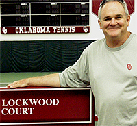

Previous: Timeless Principles of strategy | 🏠 Strategy Home | Next: Using Statistics in Coaching
Understanding the Service Box
Comprehensive unified tennis knowledge base — Fundamentals, Stroke Analysis, Reference Library, and more
Understanding the Service Box
Paul Lockwood
Mr. Chuck Straley: math teacher, tennis coach, guide to the service box.
I first began learning to understand the service box while taking a lesson from the head tennis pro at the Tulsa Tennis Club in the early 1960s. The pro's name was Mr. Chuck Straley.
Mr. Straley was a math teacher at Holland Hall School in Tulsa, where John Yandell and I were in the same class and later played high school tennis together. Mr. Straley also doubled up as the head pro at the Tulsa Tennis Club. And maybe there was a connection between his mathematical training and what he taught me about the serve, although that didn't occur to me at the time.
I was taking one of my first lessons with him and we were working on my serve and I was feeling pretty good, thinking I was going to be able to master it all within the next few days or weeks. At that point Mr. Straley stopped the lesson. He wanted me to understand that there was a lot more to serving that just getting the serve in the box, or even developing a, a hard flatter serve, a slice serve, and a kick serve.
He explained that most people divided the service box in half and learned to develop all three serves to the left half and the right half. So that meant you would have 6 serves to each side for a total of 12 different options.
Complete serving means understanding all thirds of the box.
But then Mr. Straley said, "Paul we're going to get you to the point where you can divide that box into thirds." So that meant having all three serves wide, and all three serves to the T. But it also meant have all three serves to the middle third of the box.
Mr.Straley thought if you couldn't serve the middle third in both boxes, you weren't really a complete server, and to this day, I believe he was right. "So now Paul," he said, "you are going to have 18 options in the delivery of your serve." And it's funny now after playing the juniors, playing college tennis, and coaching at the Division 1 level for over 20 years, that's the one lesson I remember the most.
What Mr. Straley showed me was is that you may not need all 18 serves in a particular match, but if you play the game long enough, you're going need all 18 of them eventually.
For example, if I sliced the serve wide and had success, like anyone else I would go right back to the same serve as often as I could, sprinkling in only a kick serve to the 'T' or a slice serve to the 'T' or whatever, just as a change-up. But I would primarily go right back to what was working.
Like pitching mix your serves to keep the returner off balance.
The opposite is also true. If I went wide with the slice serve, and the other guy hit a winner off it more than once or twice, well, that would show me that he is enjoying that serve a little too much. So, then I would consider hitting a kick serve over to that same side, hoping that when he winds up and steps in to hit it expecting the slice, maybe the ball would bounce and go right into his chest.
If that worked, then while he is thinking about it, I would probably go to the 'T' on the next serve. In that respect, serving a lot like a pitcher facing a batter.
As a pitcher, the idea is not necessarily to strike the guy out. I'm not necessarily trying to hit aces. If I hit an ace, that's like a strike out, and that's fine. But it's also okay to have that batter pop the ball up or hit the ball to the short stop. A missed return is as good as an ace. Or serving well enough to prevent a good clean return and then taking control of the point.
So, I learned at a young age that there are many ways to win a point. It's rare that it's by aces. It's usually by getting a lot of different deliveries that present problems for your opponent.
The middle third is the most under used part of the box.
The Middle Third
In developing this variety, I think the middle third is probably the most under used part of the box. When you are learning dividing the box in half, that is pretty major in itself so a lot of people don't ever consider or want to consider expanding it beyond that.
The reason I think the middle third of the box is the most under used is in our minds when we go to the middle we fear that we're hitting it right to the other player. But that should be true. As a server, you develop good control of the ball with your spins. There is no reason you can't slice a serve to the edge of that middle box, a serve that curves right into the guy's gut or pins him at the hips on either side.
Hitting to the middle third of the box is no different than hitting to the right third or the left third. You just have to developing it in proportionality and practice it as much as you do the wide serves and the serves to the T. The fact is that the majority of all players never think of the ball coming at them, or work on how to deal with it. They're subconsciously visualizing pivoting to the right or the left and hitting forehand and backhand returns.
And that what makes the serve to the middle such a great serve. That ball going right at the guy or a slider or a kicker that comes right at the player's hip - that's an unfamiliar situation for most returners. Those serves allow you to force errors with the element of surprise. The returner will at best just try to get the ball back, and that can allow you to take control of the point on the first ball.
Hitting a different serve at the right moment takes courage and can win matches.
I could give you many examples of how mixing your service deliveries works, but one stands out from a college match I coached. In the ad court my player loved to hit the slice serve to the T on the first ball. My player was winning, but as the match went on, his opponent was starting to anticipate and connect with my player's favorite serve. My guy got to match point, but I could feel that it was important to get the match on the first try and that the momentum was in danger of swinging.
So, before the point, I went over to the fence and told him, "Kick the first serve down the T." And my player kicked the ball perfectly to the T, and his opponent charged it, expecting the lower bouncing slice, moving away from him. Instead, the ball bounced up and into him and almost hit his armpit. He missed the return and that was the match.
My player's opponent reacted exactly the same way as he had to the first 100 serves that he had seen that particular day, but that was the first time my guy had hit the kick and it fooled him completely. I give my player credit for having enough confidence and guts on a match point to deviate from the slider and execute a different serve. But the bottom line was he did something unexpected at a critical moment and allowed him to win a big match.

Paul Lockwood retired this year as men's head coach after coaching the Oklahoma Sooners to 325 wins in 22 years. As a player at OU, he won the conference #1 singles and #1 doubles title in his senior year, leading his team to the conference championship as well. He was a highly nationally ranked junior and trained with contemporaries such as Brian Gottfried at the original Nick Bollettieri academy in Port Washington, New York. Currently he is the director of the new Gregg Wadley Tennis Pavillion in Norman, where he also has a select private coaching practice.
Source: tennisplayer.net archive — Understanding the Service Box.docx (John Yandell teaching library, 2002-2022). Extracted and rendered as HTML for Tennis Future Lab.